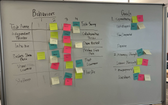
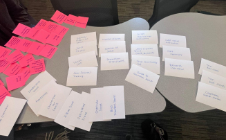
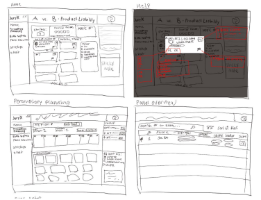
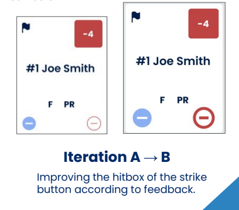
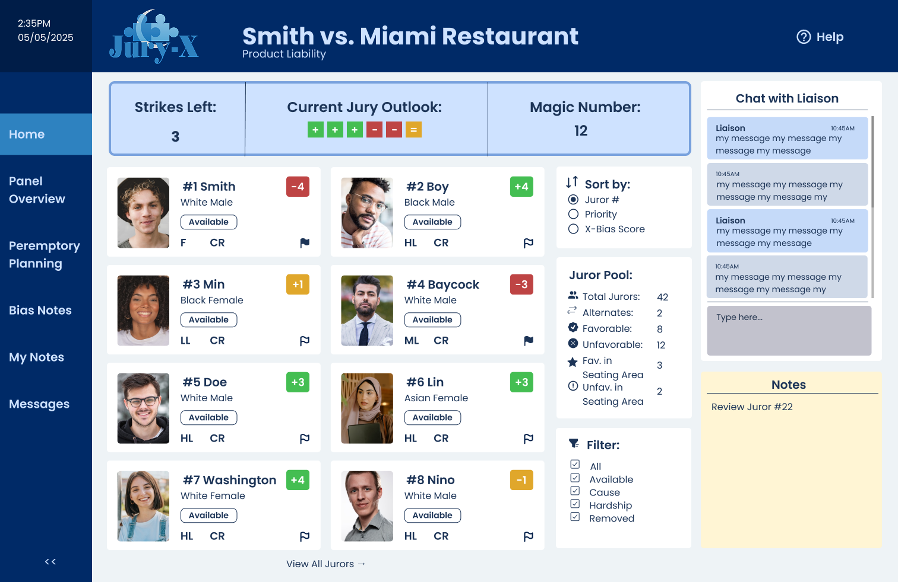
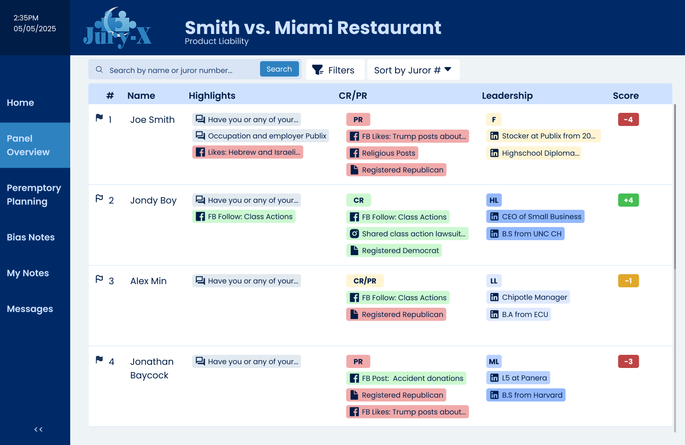
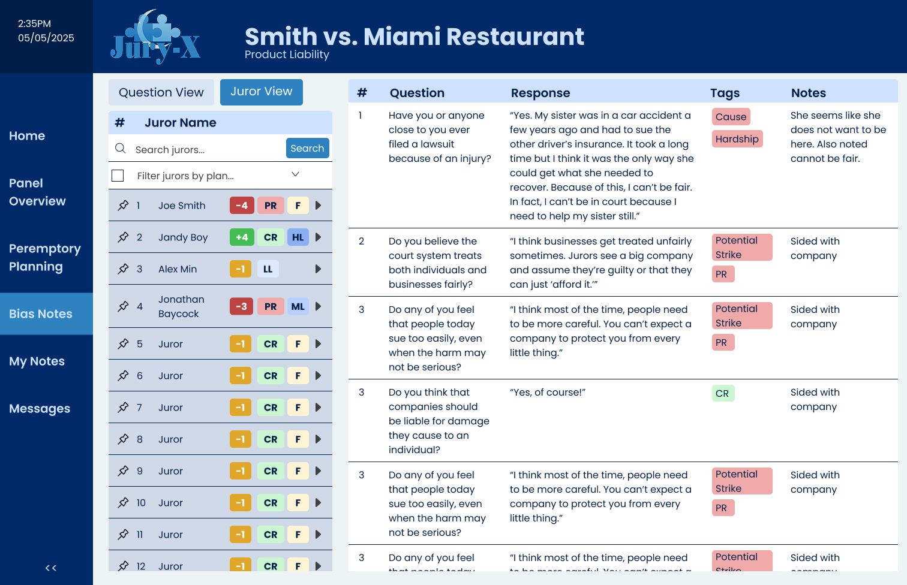

Case Study
In civil courtrooms, attorneys face intense pressure with little time and even less training to navigate complex juror data. The Jury-X Attorney Dashboard redesign streamlines this experience through a research-backed interface that condenses vital information, enables visual sorting, and reduces cognitive load during voir dire.

The Challenge
Attorneys navigate complex juror information under pressure without intuitive tools or clear guidance. The existing Jury-X system; although very efficient and successful in the hands of the Jury-X liaisons, wasn't designed for real-time courtroom decision making, creating unnecessary cognitive load during critical moments of jury selection, especially for an attorney who has never worked with Jury-X before.
My Approach
User Research → Card Sorting → Wireframing → Prototyping → Testing

1. Audience Analysis
- Conducted interviews and created personas to understand attorney needs during voir dire
- Developed empathy maps to capture pain points in the jury selection process
- Focus on including demographics with purpose, not just out of habit or what is "typical"

2. Information Architecture
- Sorted 57+ cards to determine optimal information hierarchy
- Used results to create site structure diagrams to functional elements for efficient access during trials
- Diagrammed out various user flows for key user tasks

3. Wireframing
- Began sketching concepts based on organized elements from the card sort using a pen and tablet
- From the freehand sketches, created 10+ grayscale low-mid fidelity wireframes on Figma focusing on capturing key user flows
- Prioritized visual hierarchy for critical juror attributes

4. Testing & Refinement
- Conducted 3 rounds of usability testing
- Iterated based on feedback to improve the bias notes section and overall information flow
Key Features

Home Dashboard View
A dashboard that features the essential variables that an attorney wants to monitor during their trial, as well as room to take notes and seamlessly chat with the liaison.

At-a-Glance Juror Profiles
Condensed vital information into a scannable format with color-coded indicators for quick assessment during voir dire.

Visualizing Peremptory Series Planning
Implemented drag-and-drop functionality to organize jurors by priority, bias indicators, or other attorney-defined criteria.

Bias Notes Highlighting
Developed a specialized interface for flagging and reviewing potential juror biases identified during questioning with the option to sort by juror or by question.
Usability Insights
Through three rounds of testing, I learned that attorneys needed:
- Faster ways to compare jurors side-by-side
- More prominent visual indicators for critical attributes
- Simpler navigation between different data views
These insights directly informed the final dashboard design, particularly the comparison view and color-coded tagging system.
Reflection
This project taught me the importance of user flows and card sorting in understanding complex workflows. The biggest challenge was designing for high-pressure decision making while maintaining clarity. I'm particularly proud of the bias notes interface, which went through several iterations based on user feedback.
If I had more time, I would expand the interactivity and create more detailed juror profile examples to better simulate real courtroom scenarios.